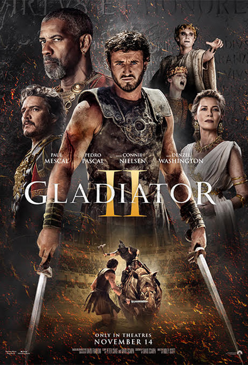

Cristopher Nolan
2014
Al ver que la vida en la Tierra está llegando a su fin, un grupo de exploradores dirigidos por el piloto Cooper (McConaughey) y la científica Amelia (Hathaway) emprende una misión que puede ser la más importante de la historia de la humanidad: viajar más allá de nuestra galaxia para descubrir algún planeta en otra que pueda garantizar el futuro de la raza humana
Reseña: 5
12/03/2017

Ridley Scott
2024
Dieciséis años después de la muerte de Marco Aurelio, Roma está gobernada por los despiadados emperadores gemelos Geta y Caracalla. El nieto de Aurelio, Lucio Vero, vive bajo el seudónimo de Hanno con su esposa Arishat en el reino norteafricano de Numidia. El ejército romano dirigido por el general Acacio invade y conquista el reino, esclavizando a Lucio junto con otros supervivientes. Los esclavos son llevados a Ostia, donde Lucio es comprado por el maestro de cuadra Macrinus, que le promete la oportunidad de vengarse matando a Acacio si gana suficientes combates para llegar al Coliseo.
Reseña: 5
30/01/2025

Alex Garland
2024
Civil War es una historia sobre responsabilidades y consecuencias, acerca de la sutil diferencia entre un héroe y un villano. La obra presenta tonos de gris en lugar de los blancos y negros morales típicos del género de superhéroes. La dicotomía entre libertad y seguridad, que se reactivó en occidente tras el atentado a las Torres Gemelas en 2001, se trasladó al universo Marvel para dar lugar a uno de los eventos más impactantes y trascendentales de su historia: la Civil War
Reseña: 2
23/10/2024